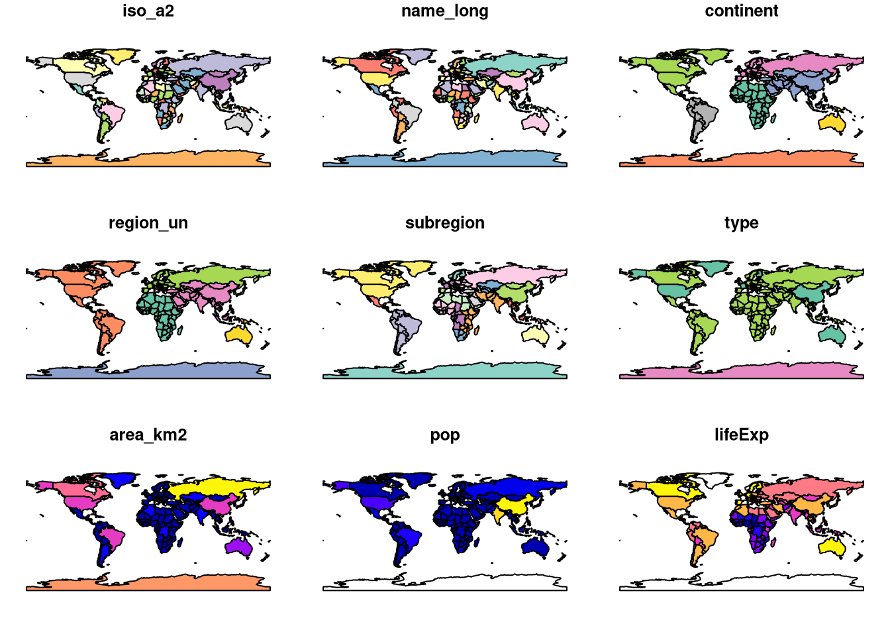
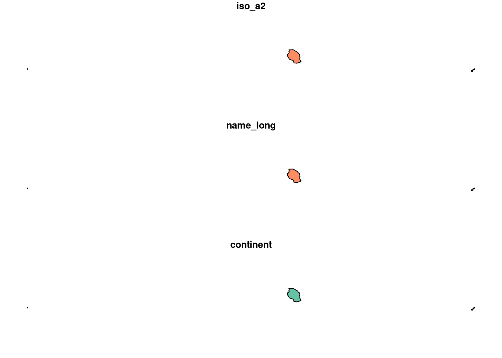
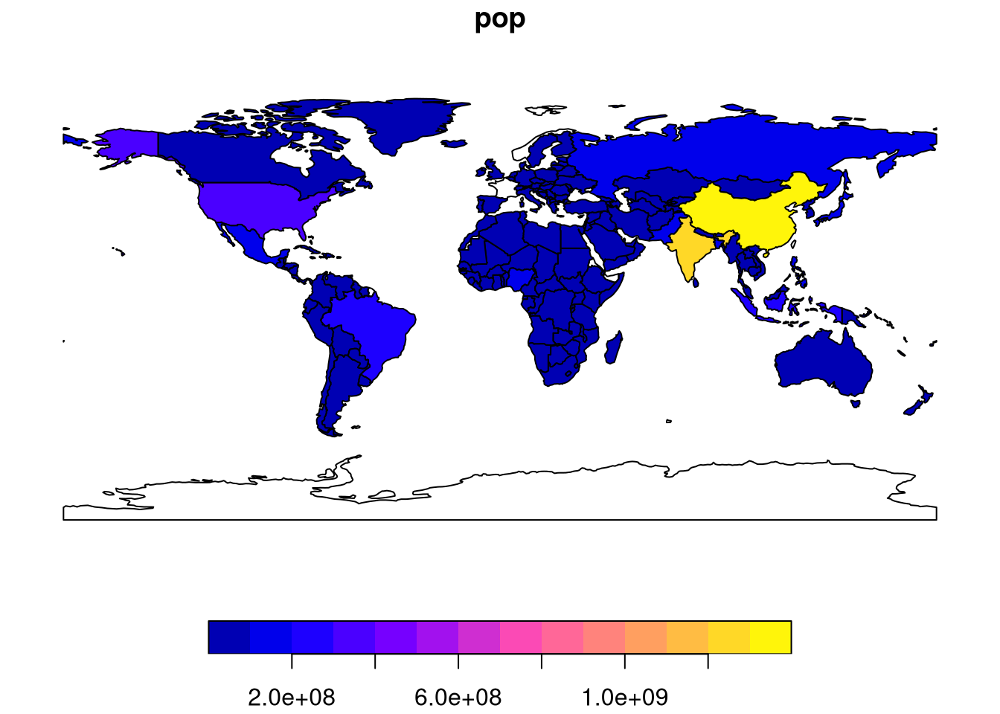
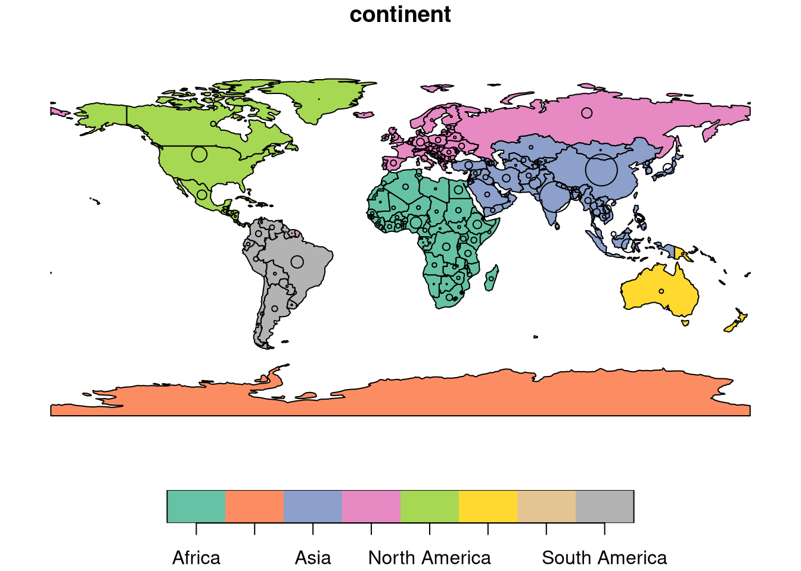
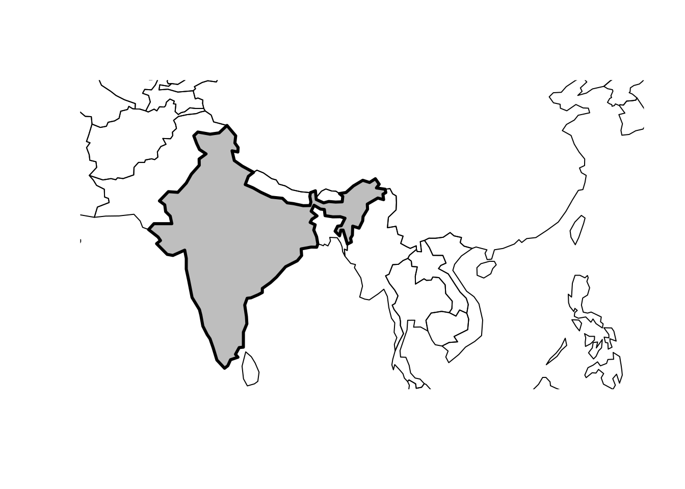
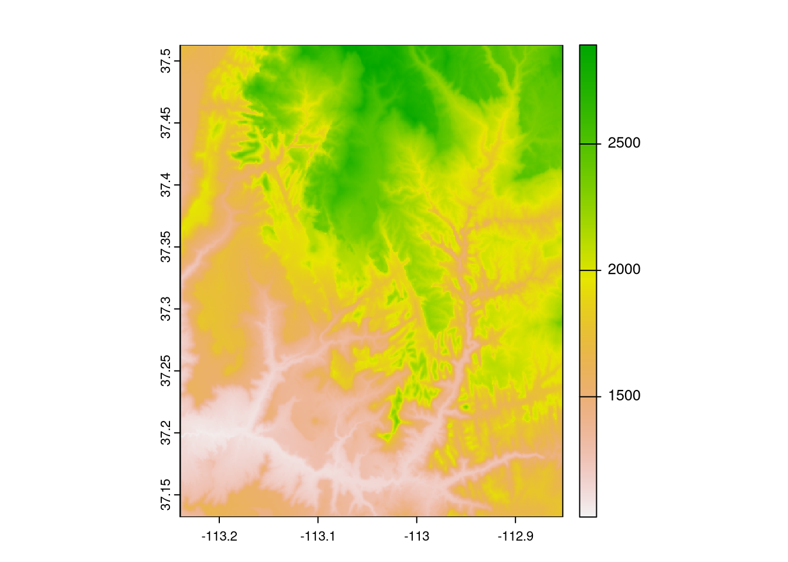

#vignette(package = "sf") # see which vignettes are available
#vignette("sf1") # an introduction to the packageDatos espaciales en R
Datos espaciales en R
En esta clase vamos a ver los conceptos básicos sobre los tipos fundamentales de datos geográficos: vector y raster. Veremos cómo están implementados en R, y ejemplificaremos algunas de las tareas más comunes que podemos realizar con cada uno de ellos.
The vector data model represents the world using points, lines and polygons. These have discrete, well-defined borders, meaning that vector datasets usually have a high level of precision (but not necessarily accuracy). The raster data model divides the surface up into cells of constant size. Raster datasets are the basis of background images used in web-mapping and have been a vital source of geographic data since the origins of aerial photography and satellite-based remote sensing devices. Rasters aggregate spatially specific features to a given resolution, meaning that they are consistent over space and scalable (many worldwide raster datasets are available).
Which to use? The answer likely depends on your domain of application:
- Vector data tends to dominate the social sciences because human settlements tend to have discrete borders
- Raster dominates many environmental sciences because of the reliance on remote sensing data
Datos vectoriales
Simple features is an open standard developed and endorsed by the Open Geospatial Consortium (OGC). Simple Features is a hierarchical data model that represents a wide range of geometry types. sf can represent all common vector geometry types (raster data classes are not supported by sf): points, lines, polygons and their respective ‘multi’ versions (which group together features of the same type into a single feature). sf also supports geometry collections, which can contain multiple geometry types in a single object.
sf’s ability to integrate multiple powerful libraries for geocomputation into a single framework is a notable achievement that reduces ‘barriers to entry’ into the world of reproducible geographic data analysis with high-performance libraries. sf’s functionality is well documented on its website at <r-spatial.github.io/sf/> which contains 7 vignettes. These can be viewed offline as follows:

simple feature objects in R are stored in a data frame, with geographic data occupying a special column, usually named ‘geom’ or ‘geometry’. We will use the world dataset provided by spData, loaded at the beginning of this chapter, to show what sf objects are and how they work.
class(world)[1] "sf" "tbl_df" "tbl" "data.frame"names(world) [1] "iso_a2" "name_long" "continent" "region_un" "subregion" "type"
[7] "area_km2" "pop" "lifeExp" "gdpPercap" "geom" The contents of this geom column give sf objects their spatial powers: world$geom is a ‘list column’ that contains all the coordinates of the country polygons. sf objects can be plotted quickly with the function plot()
plot(world)Warning: plotting the first 9 out of 10 attributes; use max.plot = 10 to plot
all
summary(world["lifeExp"]) lifeExp geom
Min. :50.62 MULTIPOLYGON :177
1st Qu.:64.96 epsg:4326 : 0
Median :72.87 +proj=long...: 0
Mean :70.85
3rd Qu.:76.78
Max. :83.59
NA's :10 sf objects are easy to subset: the code below shows how to return an object containing only the first two rows and the first three columns of the world object.
world_mini = world[1:2, 1:3]
plot(world_mini)
simple features objects are data frames, with special geometry columns. These spatial columns are often called geom or geometry: world$geom refers to the spatial element of the world object described above. These geometry columns are ‘list columns’ of class sfc (see Section 2.2.7). In turn, sfc objects are composed of one or more objects of class sfg
Simple features is a widely supported data model that underlies data structures in many GIS applications including QGIS and PostGIS.
plot(world[3:6])
plot(world["pop"])
world_asia = world[world$continent == "Asia", ]
asia = st_union(world_asia)plot(world["pop"], reset = FALSE)
plot(asia, add = TRUE, col = "red")
plot(world["continent"], reset = FALSE)
cex = sqrt(world$pop) / 10000
world_cents = st_centroid(world, of_largest = TRUE)Warning: st_centroid assumes attributes are constant over geometriesplot(st_geometry(world_cents), add = TRUE, cex = cex)
india = world[world$name_long == "India", ]
plot(st_geometry(india), expandBB = c(0, 0.2, 0.1, 1), col = "gray", lwd = 3)
plot(st_geometry(world_asia), add = TRUE)
Geometry types Geometries are the basic building blocks of simple features. Simple features in R can take on one of the 18 geometry types supported by the sf package. In this chapter we will focus on the seven most commonly used types: POINT, LINESTRING, POLYGON, MULTIPOINT, MULTILINESTRING, MULTIPOLYGON and GEOMETRYCOLLECTION. Find the whole list of possible feature types in the PostGIS manual.
Building sf vectors from scratch
Datos raster
The spatial raster data model represents the world with the continuous grid of cells (often also called pixels; Figure 2.13:A). This data model often refers to so-called regular grids, in which each cell has the same, constant size – and we will focus on the regular grids in this book only. However, several other types of grids exist, including rotated, sheared, rectilinear, and curvilinear grids (see Chapter 1 of Pebesma and Bivand (2022) or Chapter 2 of Tennekes and Nowosad (2022)).
The raster data model usually consists of a raster header and a matrix (with rows and columns) representing equally spaced cells (often also called pixels; Figure 2.13:A).15 The raster header defines the coordinate reference system, the extent and the origin. The origin (or starting point) is frequently the coordinate of the lower-left corner of the matrix (the terra package, however, uses the upper left corner, by default (Figure 2.13:B)). The header defines the extent via the number of columns, the number of rows and the cell size resolution. Hence, starting from the origin, we can easily access and modify each single cell by either using the ID of a cell (Figure 2.13:B) or by explicitly specifying the rows and columns. This matrix representation avoids storing explicitly the coordinates for the four corner points (in fact it only stores one coordinate, namely the origin) of each cell corner as would be the case for rectangular vector polygons. This and map algebra (Section 4.3.2) makes raster processing much more efficient and faster than vector data processing. However, in contrast to vector data, the cell of one raster layer can only hold a single value. The value might be numeric or categorical (Figure 2.13:C).

Raster maps usually represent continuous phenomena such as elevation, temperature, population density or spectral data. Discrete features such as soil or land-cover classes can also be represented in the raster data model.

R packages for working with raster data Over the last two decades, several packages for reading and processing raster datasets have been developed. As outlined in Section 1.5, chief among them was raster, which led to a step change in R’s raster capabilities when it was launched in 2010 and the premier package in the space until the development of terra and stars. Both more recently developed packages provide powerful and performant functions for working with raster datasets and there is substantial overlap between their possible use cases. In this book we focus on terra, which replaces the older and (in most cases) slower raster. Before learning about the how terra’s class system works, this section describes similarities and differences between terra and stars; this knowledge will help decide which is most appropriate in different situations.
An introduction to terra The terra package supports raster objects in R. Like its predecessor raster (created by the same developer, Robert Hijmans), it provides an extensive set of functions to create, read, export, manipulate and process raster datasets. terra’s functionality is largely the same as the more mature raster package, but there are some differences: terra functions are usually more computationally efficient than raster equivalents. On the other hand, the raster class system is popular and used by many other packages. You can seamlessly translate between the two types of object to ensure backwards compatibility with older scripts and packages, for example, with the functions raster(), stack(), and brick() in the raster package (see the previous chapter for more on the evolution of R packages for working with geographic data).
In addition to functions for raster data manipulation, terra provides many low-level functions that can form a foundation for developing new tools for working with raster datasets. terra also lets you work on large raster datasets that are too large to fit into the main memory. In this case, terra provides the possibility to divide the raster into smaller chunks, and processes these iteratively instead of loading the whole raster file into RAM.
raster_filepath = system.file("raster/srtm.tif", package = "spDataLarge")
my_rast = rast(raster_filepath)
class(my_rast)[1] "SpatRaster"
attr(,"package")
[1] "terra"#> [1] "SpatRaster"
#> attr(,"package")
#> [1] "terra"my_rastclass : SpatRaster
dimensions : 457, 465, 1 (nrow, ncol, nlyr)
resolution : 0.0008333333, 0.0008333333 (x, y)
extent : -113.2396, -112.8521, 37.13208, 37.51292 (xmin, xmax, ymin, ymax)
coord. ref. : lon/lat WGS 84 (EPSG:4326)
source : srtm.tif
name : srtm
min value : 1024
max value : 2892 #> class : SpatRaster
#> dimensions : 457, 465, 1 (nrow, ncol, nlyr)
#> resolution : 0.000833, 0.000833 (x, y)
#> extent : -113, -113, 37.1, 37.5 (xmin, xmax, ymin, ymax)
#> coord. ref. : lon/lat WGS 84 (EPSG:4326)
#> source : srtm.tif
#> name : srtm
#> min value : 1024
#> max value : 2892plot(my_rast)
Raster classes
The terra package supports numerous drivers with the help of the GDAL library. Rasters from files are usually not read entirely into RAM, with an exception of their header and a pointer to the file itself.
single_raster_file = system.file("raster/srtm.tif", package = "spDataLarge")
single_rast = rast(raster_filepath)Rasters can also be created from scratch using the same rast() function.
new_raster = rast(nrows = 6, ncols = 6,
xmin = -1.5, xmax = 1.5, ymin = -1.5, ymax = 1.5,
vals = 1:36)The SpatRaster class also handles multiple layers, which typically correspond to a single multispectral satellite file or a time-series of rasters.
multi_raster_file = system.file("raster/landsat.tif", package = "spDataLarge")
multi_rast = rast(multi_raster_file)
multi_rastclass : SpatRaster
dimensions : 1428, 1128, 4 (nrow, ncol, nlyr)
resolution : 30, 30 (x, y)
extent : 301905, 335745, 4111245, 4154085 (xmin, xmax, ymin, ymax)
coord. ref. : WGS 84 / UTM zone 12N (EPSG:32612)
source : landsat.tif
names : landsat_1, landsat_2, landsat_3, landsat_4
min values : 7550, 6404, 5678, 5252
max values : 19071, 22051, 25780, 31961 #> class : SpatRaster
#> dimensions : 1428, 1128, 4 (nrow, ncol, nlyr)
#> resolution : 30, 30 (x, y)
#> extent : 301905, 335745, 4111245, 4154085 (xmin, xmax, ymin, ymax)
#> coord. ref. : WGS 84 / UTM zone 12N (EPSG:32612)
#> source : landsat.tif
#> names : landsat_1, landsat_2, landsat_3, landsat_4
#> min values : 7550, 6404, 5678, 5252
#> max values : 19071, 22051, 25780, 31961nlyr(multi_rast)[1] 4#> [1] 4multi_rast3 = subset(multi_rast, 3)
multi_rast4 = subset(multi_rast, "landsat_4")multi_rast34 = c(multi_rast3, multi_rast4)Operaciones con atributos
Attribute data is non-spatial information associated with geographic (geometry) data.